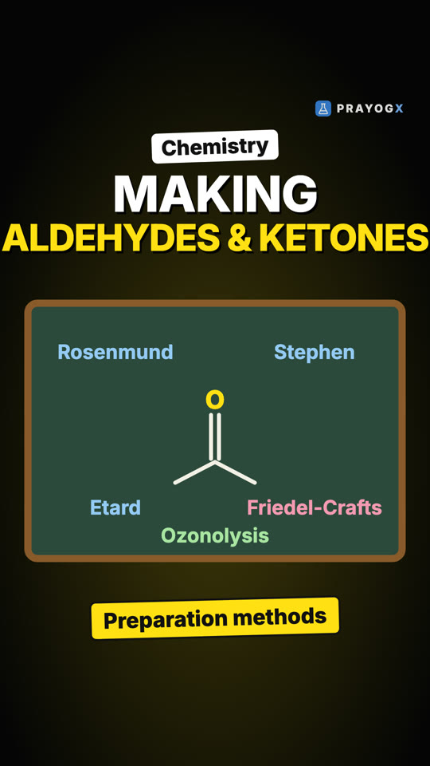
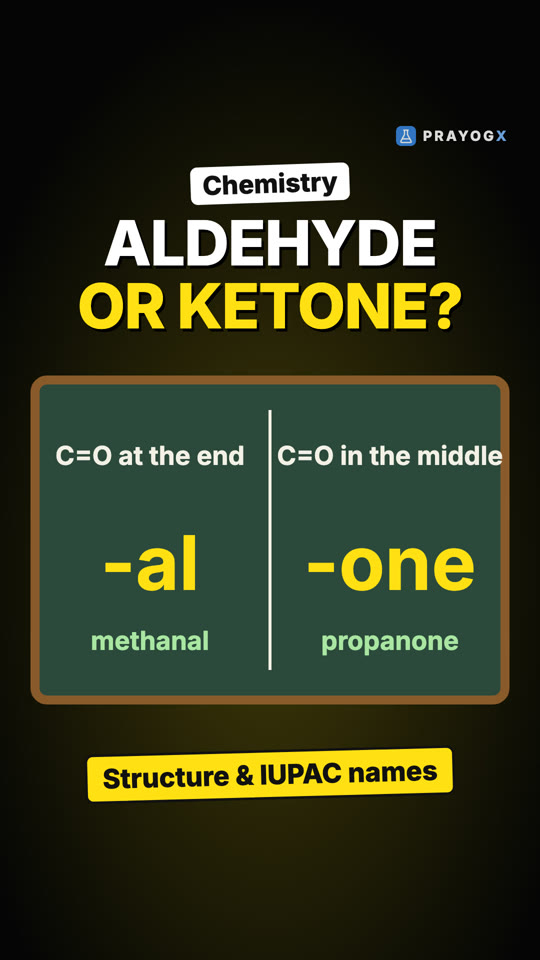
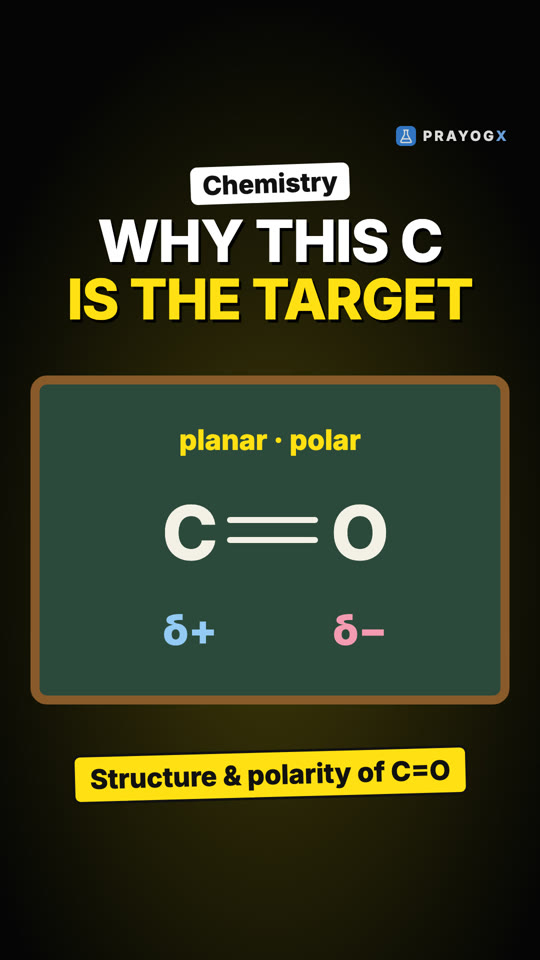
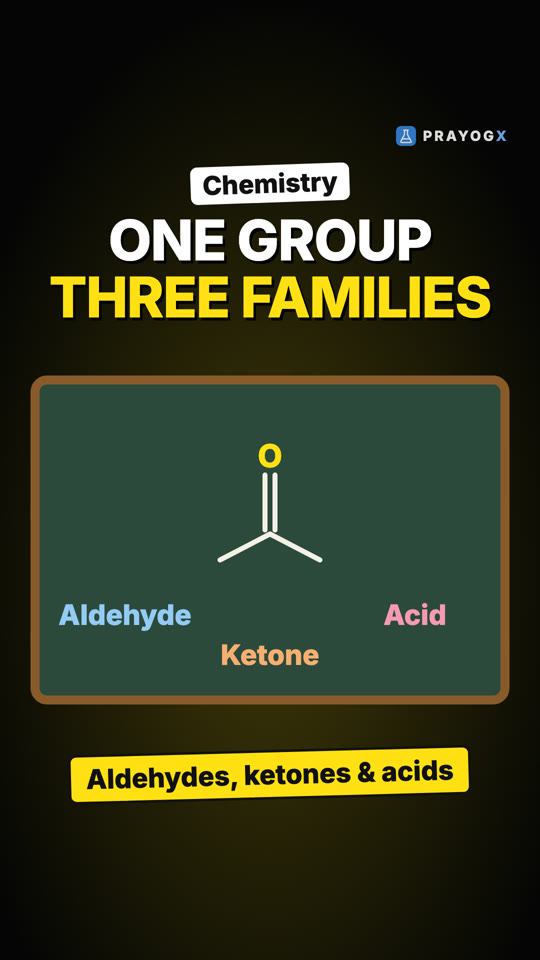
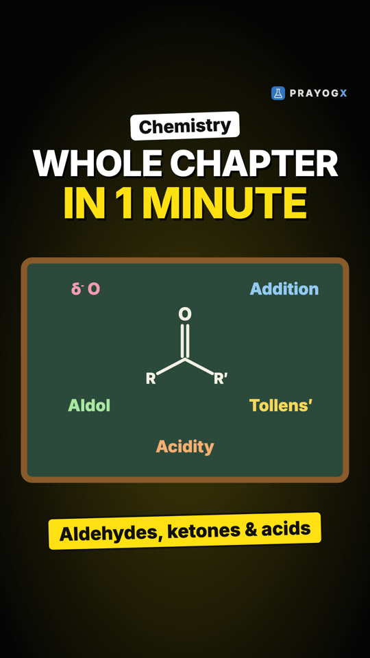
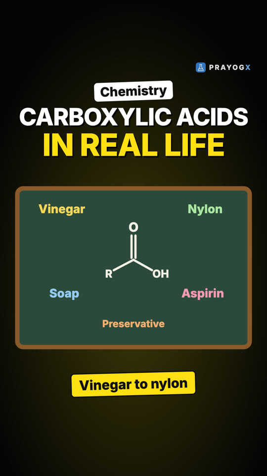

Choose your class
Every subject is laid out chapter by chapter. Each topic has a short Doodle video, notes you can download and a quick quiz.
Class 9Motion, matter, the cell and number systems: the foundations of school science and maths.ScienceMathematics21 videosClass 10Light, electricity, chemical reactions, life processes and the algebra and geometry of board year.ScienceMathematics9 videosClass 11Mechanics, thermodynamics, atomic structure, bonding, functions and the living world.PhysicsChemistryMathematicsBiology16 videosClass 12Electromagnetism, optics, modern physics, solutions and kinetics, calculus and genetics.PhysicsChemistryMathematicsBiology29 videosExtra / SupplementaryCurious questions beyond the syllabus: why the sky is blue, why we yawn, why 0.999… equals 1, and more.ScienceBiologyMathematics11 videos
Newest videos

Making Aldehydes and Ketones: Methods and Named ReactionsFour routes make both aldehydes and ketones (from alcohols, alkenes and alkynes); named reactions make only one: Rosenmund, Stephen, Etard and Gatterman-Koch for aldehydes; Grignard on nitriles, dialkylcadmium and Friedel-Crafts acylation for ketones.Aldehydes, Ketones and Carboxylic Acids · Chemistry
Aldehyde or Ketone? Structure and IUPAC NamesMethanal and propanone both have C=O, yet one is an aldehyde and one a ketone. Where the C=O sits decides it, and the names follow: -al for aldehydes, -one for ketones, plus the common names.Aldehydes, Ketones and Carboxylic Acids · Chemistry
The Carbonyl Group: Structure and PolarityWhy the carbon of C=O is every nucleophile's target: an sp², planar carbon, a π bond from sideways p–p overlap, and a polar C=O with δ⁺ carbon and δ⁻ oxygen, explained by resonance.Aldehydes, Ketones and Carboxylic Acids · Chemistry
Aldehydes, Ketones and Carboxylic Acids: Chapter IntroductionVanilla, cinnamon, vinegar and nail-polish remover share one secret: the carbonyl group, C=O. What sits on the carbonyl carbon makes an aldehyde, a ketone or a carboxylic acid, and what this chapter will cover.Aldehydes, Ketones and Carboxylic Acids · Chemistry
Aldehydes, Ketones and Carboxylic Acids: The Whole Chapter in One MinuteThe chapter in one place: the polar, planar C=O group; how aldehydes and ketones are made; nucleophilic addition; aldol and Cannizzaro; Tollens' and Fehling's tests; and why carboxylic acids are acidic.Aldehydes, Ketones and Carboxylic Acids · Chemistry
Vinegar to Nylon: Uses of Carboxylic AcidsWhere carboxylic acids are used: formic acid in industry, acetic acid as a solvent and vinegar, adipic acid for nylon-6,6 through amide links, sodium benzoate as a food preservative, fatty-acid salts as soap, and aspirin as a medicine.Aldehydes, Ketones and Carboxylic Acids · Chemistry